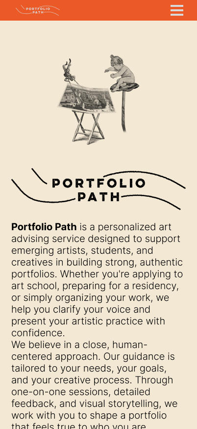
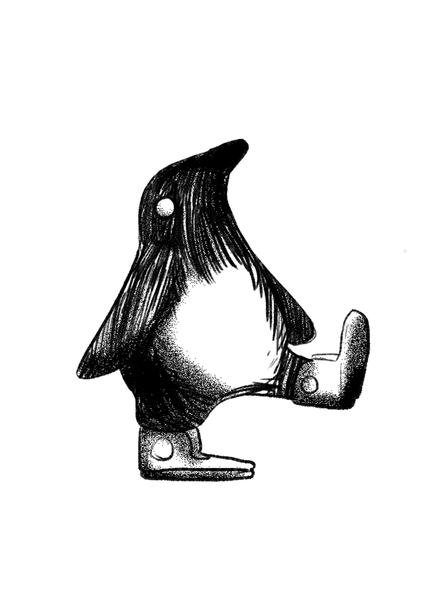
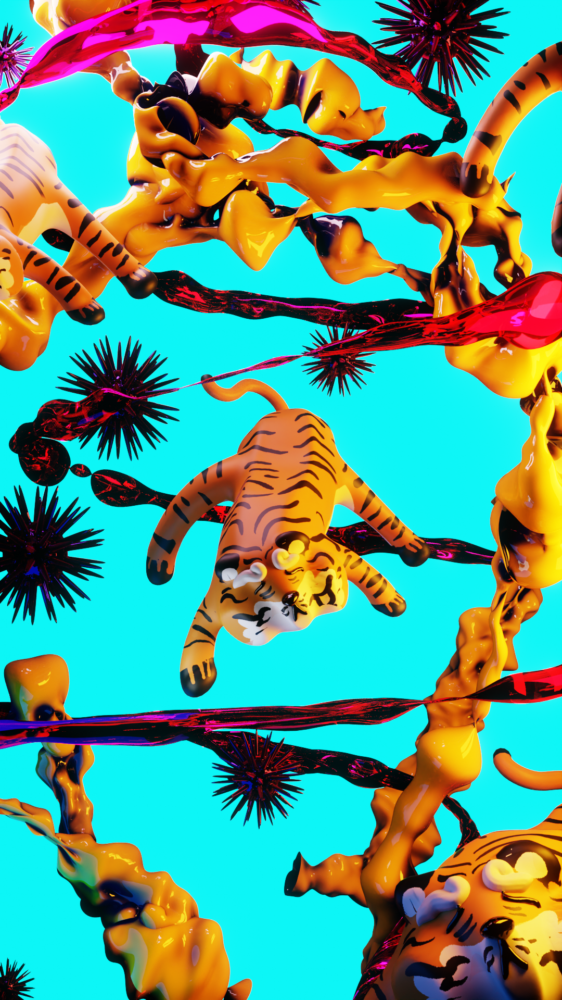

Simón De Zubiría Restrepo
Diseñador y desarrollador web
Me interesa profundamente la programación como una herramienta para crear experiencias visuales significativas, impactantes y técnicamente refinadas. Considero el código no solo como un lenguaje funcional, sino como un medio creativo con el potencial de generar conexiones auténticas a través del arte, la interacción y el diseño. Poseo una sensibilidad estética desarrollada y un fuerte impulso hacia la creación en todas sus formas. Mis intereses abarcan el desarrollo visual con código, el diseño gráfico, la animación, la ilustración, el 3D y las experiencias interactivas.
Descargar CVProyectos

Oscilaciones
Una exploración metamodernista del amor
Portfolio Path
Diseño web y branding para una marca de asesoría de arte
The Doubtful Guest
Proyecto Web narrativo

LabJusticia
Desarrollo de la página del laboratorio para la justica Uniandes
Otros territorios
Exploraciones visuales, ideas sueltas y proyectos paralelos